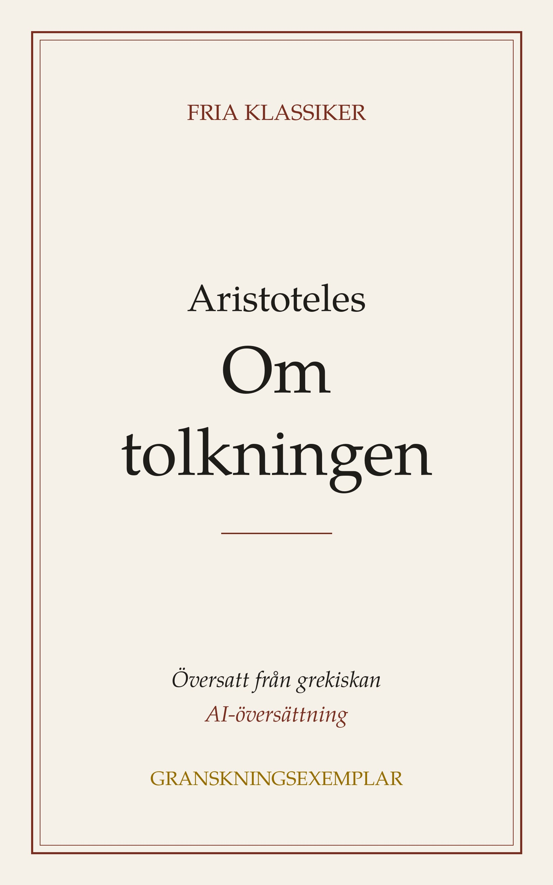
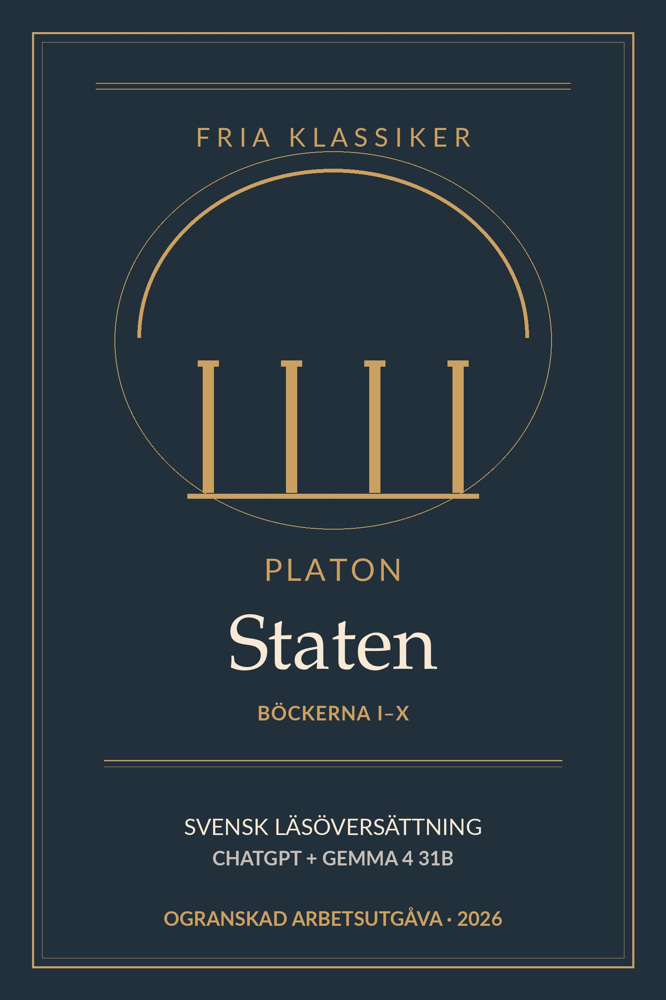
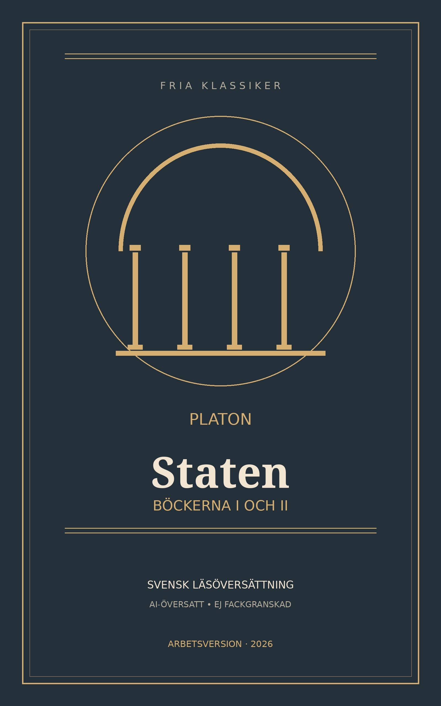
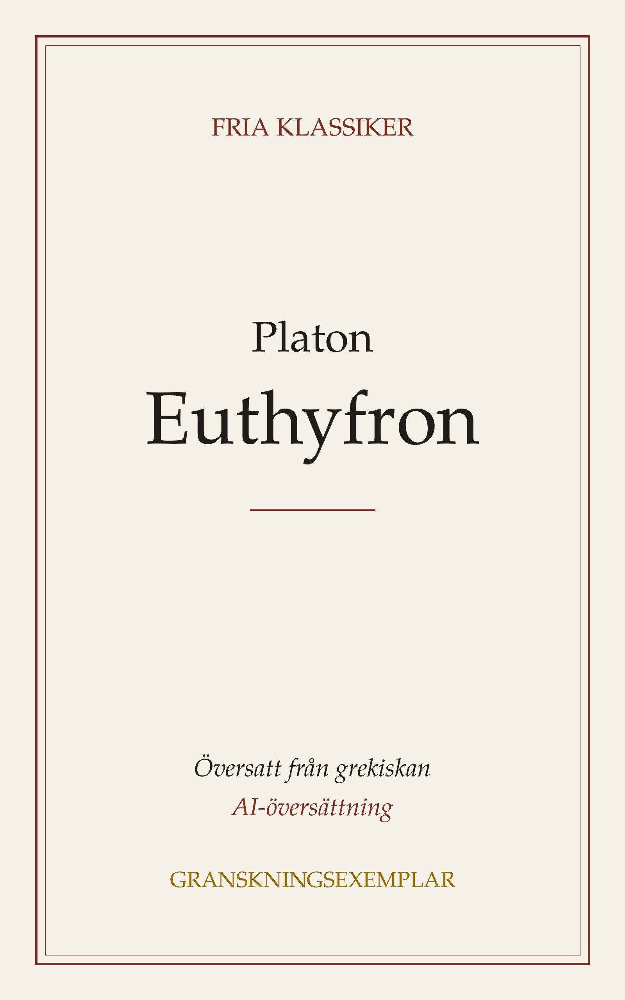
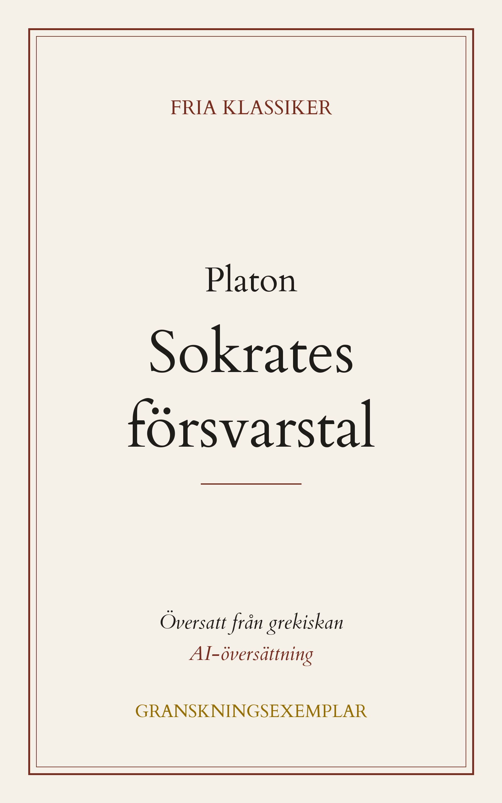
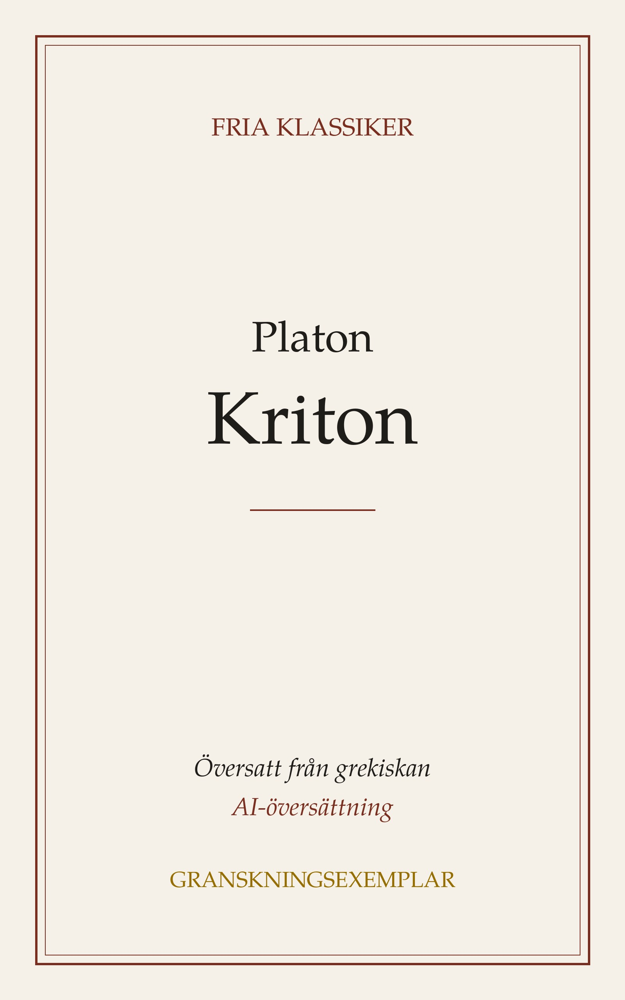
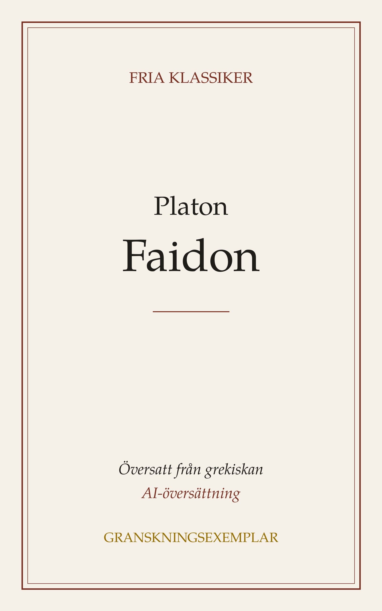
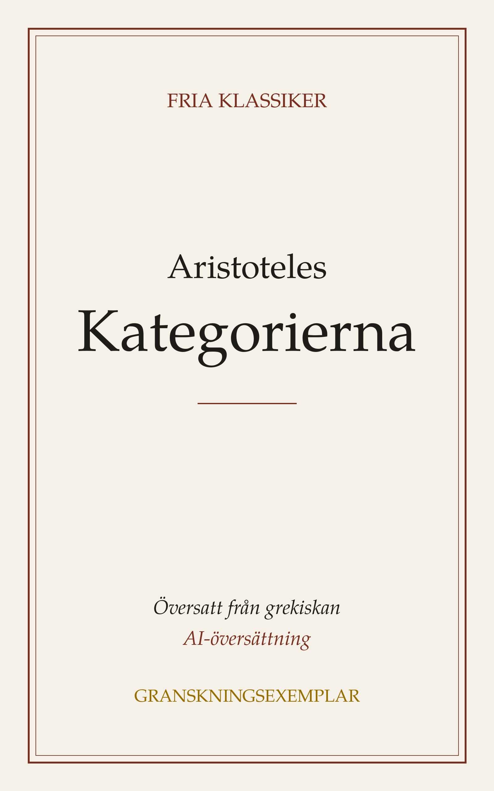
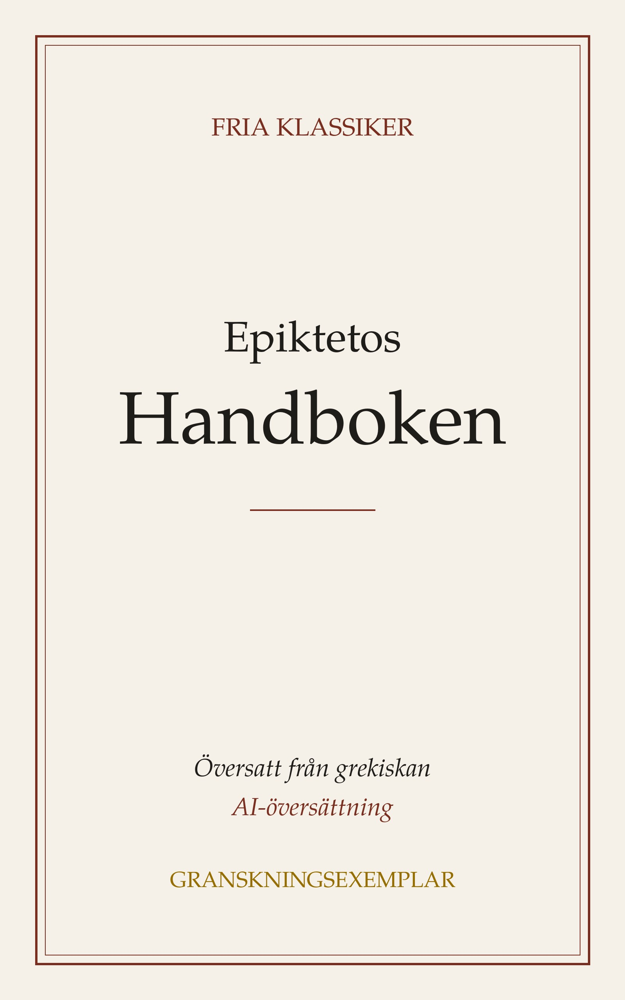

4 dialoger i 1
4 dialoger i 1
Sokrates sista dagar
Följ Sokrates från anklagelsen till den sista dagen i fängelset. De fyra dialogerna Euthyfron, Sokrates försvarstal, Kriton och Faidon samlas här i den ordning som berättelsen utspelar sig.
Från Sokrates och stoikerna till försokratikernas gåtfulla fragment. Utforska antikens filosofi på nutida svenska, utan betalväggar.
Hitta en dialog att börja med, följ ett filosofiskt argument eller fördjupa dig i ett helt fragmentarkiv.
12 av 12 utgåvor
4 dialoger i 1
Följ Sokrates från anklagelsen till den sista dagen i fängelset. De fyra dialogerna Euthyfron, Sokrates försvarstal, Kriton och Faidon samlas här i den ordning som berättelsen utspelar sig.
Den romerske kejsarens privata anteckningar, skrivna på grekiska. Tolv böcker med stoiska tankar om förnuft och plikt, gemenskap, livets förgänglighet och konsten att styra sitt eget omdöme.

Ny utgåvaDen andra skriften i Aristoteles Organon. Om namn, verb och påståenden, motsägelsers sanning och framtidens möjligheter. I kapitel 9 behandlas det klassiska exemplet om ett sjöslag i morgon.
Försokratikerna kallas de grekiska tänkare som verkade före eller samtidigt med Sokrates, från Thales och Anaximandros i Miletos på 500-talet f.Kr. till Demokritos. De frågade vad allt är gjort av, hur förändring är möjlig…

10 böcker · ArbetsutgåvaHela Platons Staten på svenska. Bok III–X har översatts med en lokalt finjusterad Gemma 4 31B, via Paul Shoreys engelska text. Välj bok, läs online eller hämta som PDF och EPUB. Ogranskade arbetsutgåvor.

Ofullständig utgåvaVad är rättvisa? Sokrates diskuterar den starkares rätt och stadens uppkomst med Thrasymachos, Glaukon och Adeimantos. Endast de två första av verkets tio böcker är översatta här, via Paul Shoreys engelska text med grekiska…

AI-översättningSokrates är på väg till kungens pelargång i Aten för att ta emot Meletos anklagelse för gudlöshet. Där möter han Euthyfron, en präst och spåman som just har åtalat sin egen far för mord. Euthyfron är säker på att han vet vad…

AI-översättningVåren 399 f.Kr. står Sokrates, sjuttio år gammal, inför en folkdomstol i Aten, anklagad för att inte erkänna stadens gudar och för att fördärva ungdomen. Platon var närvarande vid rättegången. Talet består av tre delar:…

AI-översättningNågra dagar före avrättningen besöker vännen Kriton Sokrates i fängelset i gryningen. Flykten är ordnad och pengarna finns. Sokrates vägrar och prövar i stället frågan om det någonsin kan vara rätt att göra orätt tillbaka.…

AI-översättningFaidon, som var med i fängelset, berättar för Ekekrates i Fleius om Sokrates sista dag. Samtalet med Simmias och Kebes handlar om själen: om filosofen bör frukta döden, om själen fanns före kroppen och om den är odödlig. Här…

AI-översättningKategorierna är den första skriften i Aristoteles logiska verk, Organon. Den frågar vad det är vi talar om när vi säger något om något, och delar in allt som sägs utan förbindelse i tio slag: väsen, mängd, beskaffenhet, det…

AI-översättningEpiktetos (ca 50–135 e.Kr.) föddes som slav och blev en av de mest lästa stoiska lärarna. Han skrev själv ingenting. Hans elev Arrianos tecknade ned undervisningen och sammanfattade dess kärna i denna korta handbok. Den…
Här hittar du inte anonyma, maskinskapade texter. Översättningarna är AI-framställda, källtexterna och arbetsmetoden redovisas och utgåvorna är märkta med sin granskningsstatus. Rättelser välkomnas.
Läs om metoden ↗Kunskap blir större när fler får läsa, ifrågasätta och förbättra den.
FRIA KLASSIKER · ÖPPET TEXTARBETE